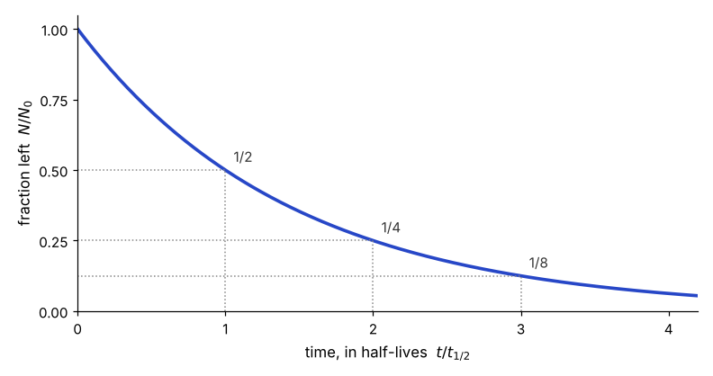

Covers the example slides 2 to 14 and the example reading on activity; carbon dating is its own unit.
A radioactive sample loses a fixed fraction of its remaining nuclei per unit time, so the number left falls exponentially: \(N(t)=N_0e^{-\lambda t}\). The decay constant \(\lambda\) and the half-life \(t_{1/2}=\ln 2/\lambda\) carry the same information, and after \(n\) half-lives a fraction \((1/2)^n\) remains. The activity, the number of decays per second, is \(A=\lambda N\), so it falls with the same half-life as the sample.
Example slides 2 to 6
Every unstable nucleus in a sample has the same small chance of decaying in the next instant, and that chance does not depend on how long the nucleus has existed. Over a short time \(dt\) a nucleus decays with probability \(\lambda\,dt\), where \(\lambda\) is the decay constant, measured per unit time.
With \(N\) nuclei present, about \(\lambda N\,dt\) of them decay in that time, so the number left changes at a rate proportional to the number left.

Exam hintRecognizing \(N(t)=N_0e^{-\lambda t}\) from the rate equation, and going back the other way, is the core skill of this unit.
Example slides 7 to 11
The decay constant is hard to picture, so decay is usually described by the time it takes for half of the sample to decay.
Setting \(N(t_{1/2})=N_0/2\) in the decay law and taking logarithms gives the half-life in terms of \(\lambda\).
A large decay constant means a short half-life: the two move in opposite directions.
When the elapsed time is a whole number of half-lives, no logarithms are needed: each half-life multiplies the amount by one half.
| Half-lives elapsed | Fraction left | Fraction decayed |
|---|---|---|
| 1 | 1/2 | 1/2 |
| 2 | 1/4 | 3/4 |
| 3 | 1/8 | 7/8 |
| \(n\) | \((1/2)^n\) | \(1-(1/2)^n\) |
An isotope has \(t_{1/2}=8\) days. After 24 days, three half-lives have passed, so \((1/2)^3=1/8\) of the sample remains and \(7/8\) has decayed.
Not testedWhy each isotope has the decay constant it has is a question for nuclear physics and is not part of this course.
Example reading, pages 41 to 43
What a detector counts is not \(N\) but the number of decays per second, the activity \(A=\lambda N\). Because activity is proportional to \(N\), it falls with exactly the same half-life.
Since \(N\) itself halves every \(t_{1/2}\) (1.2), a sample whose activity has dropped to one eighth has been decaying for three half-lives.
How confident are you on Lecture 1?